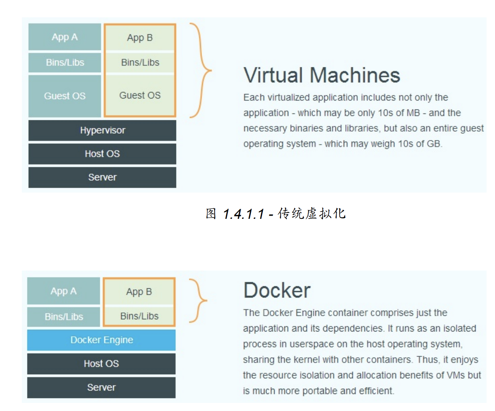
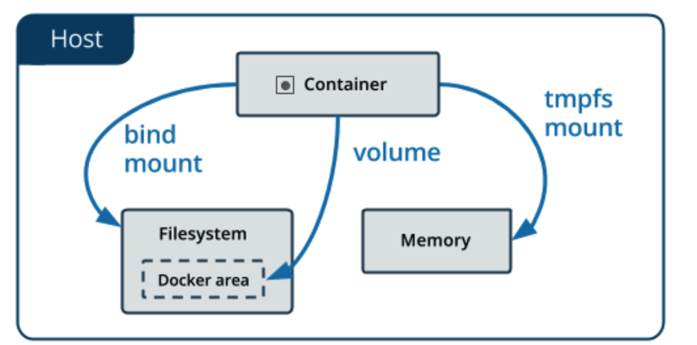
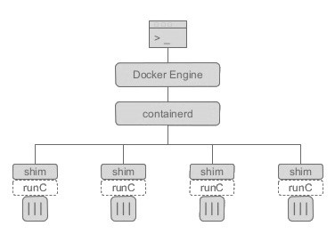
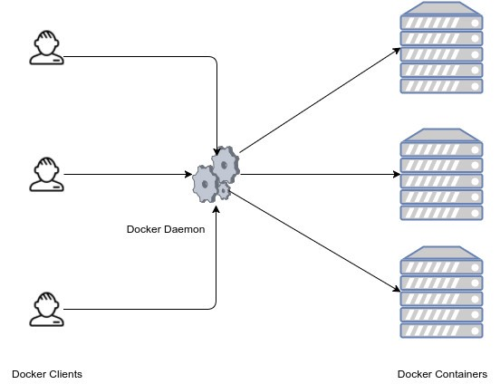
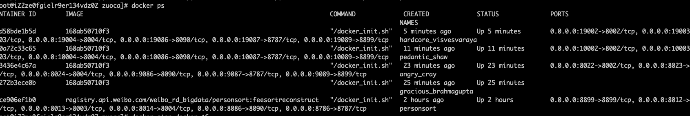
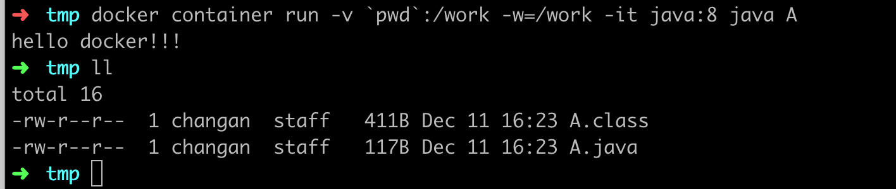

[toc]
docker
Docker 使用 Google 公司推出的 Go 语言 进行开发实现，基于 Linux 内核的
cgroup，namespace，以及 AUFS 类的 Union FS 等技术，对进程进行封装隔离，
属于 操作系统层面的虚拟化技术。
由于隔离的进程独立于宿主和其它的隔离的进程，因此也称其为容器。最初实现是基于 LXC，从 0.7 版本以后开始去除 LXC，转而使用自行开发的 libcontainer，从 1.11 开始，则进一步演进为使用 runC 和containerd。
- LXC
linux container
Docker 在容器的基础上，进行了进一步的封装，从文件系统、网络互联到进程隔
离等等，极大的简化了容器的创建和维护。使得 Docker 技术比虚拟机技术更为轻
便、快捷。

Namespaces(隔离资源)
Docker makes use of kernel namespaces to provide the isolated workspace called the container. When you run a container, Docker creates a set of namespaces for that container. These namespaces provide a layer of isolation. Each aspect of a container runs in a separate namespace and its access is limited to that namespace.
Docker Engine uses the following namespaces on Linux:
- PID namespace for process isolation.
- NET namespace for managing network interfaces.
- IPC namespace for managing access to IPC resources.
- MNT namespace for managing filesystem mount points.
- UTS namespace for isolating kernel and version identifiers.
Cgroups (限制资源)
Docker also makes use of kernel control groups for resource allocation and isolation. A cgroup limits an application to a specific set of resources.
最佳实践
- 按照 Docker 最佳实践的要求，容器不应该向其存储层内写入任何数据，容器存储
层要保持无状态化。所有的文件写入操作，都应该使用 数据卷（Volume）、或者
绑定宿主目录，在这些位置的读写会跳过容器存储层，直接对宿主（或网络存储）
发生读写，其性能和稳定性更高。
每一个指令都会构建新的一层，docker对层数有限制，避免构建太多层，也需要避免构建太多无用的东西
参考:docker_practice.pdf
注意构建上下文
应用场景
将特定版本的依赖与配置构建到一个镜像中，一方面可以避免传统部署时的版本冲突，另一方面可以加速大规模部署
基本概念
What is Dockerfile
用于指示如何构建一个镜像
Dockerfile第一行必须是From指令,即镜像必须基于一个base image创建
docker maven plugin
docker compose
Docker Compose is a tool for defining and running complex applications with Docker. With Compose, you define a multi-container application in a single file, then spin your application up in a single command which does everything that needs to be done to get it running.
更方便的管理多个container
swarm mode
“Dockerized” cluster called a swarm
类似于集群模式，有load balance的能力
A swarm is a group of machines that are running Docker and joined into a cluster. After that has happened, you continue to run the Docker commands you’re used to, but now they are executed on a cluster by a swarm manager. The machines in a swarm can be physical or virtual. After joining a swarm, they are referred to as nodes.
启用swarm模式
docker swarm init
部署服务
docker stack deploy
常用命令
镜像发布
- 通过仓库
docker push - 通过磁盘方式
docker save # Save one or more images to a tar archive
docker export # Export a container’s filesystem as a tar archive
- 通过仓库
docker build -t ${tag} .
docker image ls
docker container run -it
-i 交互模式运行
-t 分配一个伪终端给当前processdocker commit
docker exec [OPTIONS] CONTAINER COMMAND [ARG…]
Run a command in a running container
docker run [OPTIONS] IMAGE [COMMAND] [ARG…]
Run a command in a new container
docker run –name docker-zk –restart always -p 2181:2181 -d zookeeper:3.4
docker 端口映射
docker logs
查看container的stdout和stderr
一些重要的点
docker执行用户
Without any other option provided, processes in containers will execute as root (unless a different uid was supplied in the Dockerfile).
https://medium.com/@mccode/understanding-how-uid-and-gid-work-in-docker-containers-c37a01d01cf
container 以 A用户执行
以root用户连接container执行操作
docker exec -it –user root
storage drivers
The storage driver controls how images and containers are stored and managed on your Docker host.
数据存储
volumes
Volumes are stored in a part of the host filesystem which is managed by Docker (/var/lib/docker/volumes/ on Linux). Non-Docker processes should not modify this part of the filesystem. Volumes are the best way to persist data in Docker.
volume相当于做了一层抽象,volume的实现可以是多种多样的，比如基于网络的
bind mounts
Bind mounts may be stored anywhere on the host system. They may even be important system files or directories. Non-Docker processes on the Docker host or a Docker container can modify them at any time.
注意:
Bind mounts allow access to sensitive files,bind必须使用绝对路径，相对路径会被当做volume name进行解析的
diff
Bind mounts have been around since the early days of Docker.
Bind mounts have limited functionality compared to volumes.
When you use a bind mount, a file or directory on the host machine is mounted into a container. The file or directory is referenced by its full or relative path on the host machine.
By contrast, when you use a volume, a new directory is created within Docker’s storage directory on the host machine, and Docker manages that directory’s contents.
service
A service is a group of containers of the same image:tag.
Services make it simple to scale your application. With Docker Cloud, you simply drag a slider to change the number of containers in a service.
docker特权模式
https://docs.docker.com/engine/reference/run/
By default, Docker containers are “unprivileged” and cannot, for example, run a Docker daemon inside a Docker container. This is because by default a container is not allowed to access any devices, but a “privileged” container is given access to all devices (see the documentation on cgroups devices).
默认情况下有些命令是无法执行的，比如strace
周边组件与服务
http://alexander.holbreich.org/docker-components-explained/
从 Docker 1.11 之后，Docker Daemon 被分成了多个模块以适应 OCI 标准。拆分之后，结构分成了以下几个部分。

其中，containerd 独立负责容器运行时和生命周期（如创建、启动、停止、中止、信号处理、删除等），其他一些如镜像构建、卷管理、日志等由 Docker Daemon 的其他模块处理。
dockerd (docker dameon)
和一般的 CS 架构系统一样，守护进程负责和 Docker client 交互，并管理 Docker 镜像、容器。
dockerd is the persistent process that manages containers. Docker uses different binaries for the daemon and client. To run the daemon you type dockerd.
dockerd可以监听socket，来执行用户通过网络发起的docker engine api(比如执行个命令什么的)

containerd and docker-containerd
containerd是容器技术标准化之后的产物，为了能够兼容OCI 标准，将容器运行时及其管理功能从 Docker Daemon 剥离。理论上，即使不运行 dockerd，也能够直接通过 containerd 来管理容器。（当然，containerd 本身也只是一个守护进程，容器的实际运行时由后面介绍的 runC 控制。）
docker-containerd-shim
runc
RunC
OCI 定义了容器运行时标准，runC 是 Docker 按照开放容器格式标准（OCF, Open Container Format）制定的一种具体实现。
containerd is available as a daemon for Linux and Windows. It manages the complete container lifecycle of its host system, from image transfer and storage to container execution and supervision to low-level storage to network attachments and beyond.
FAQ
top和free看到是物理机的信息还是container的信息
受限于目前free和top的实现方式，查看到的是物理机的信息.
可以通过docker stats查看到容器的使用信息
container中经常缺少各种常用命令，比如wget，tar等等，除了在容器中进行安装外，还有其他方法吗?
将宿主机包含这些命令的目录通过-v映射到容器中也行.
这些诡异的docker怎么来的?

启动docker时如果不指定名称，系统将随机分配一个
container 运行时的数据写到哪了，如何查看？
默认情况下，container运行时会创建一个writable container layer
docker exec vs docker container exec
docker exec 可以看做别名，可能会deprecated
difference between -v and -mount
https://docs.docker.com/storage/bind-mounts/#choosing-the--v-or---mount-flag
Docker 17.06 版本后没有区别，只是mount的参数更加显性化，利于理解
-v选项使用
-v hostpath:containerpath:options-mount选项使用
--mount type=bind,source="$(pwd)"/target,target=/app查看已经stopped的container
docker ps -a
what is docker tag?
image构建出来后，默认系统会生成一个id，为了便于使用，可以分配一个tag
将本地文件绑定到工作目录
